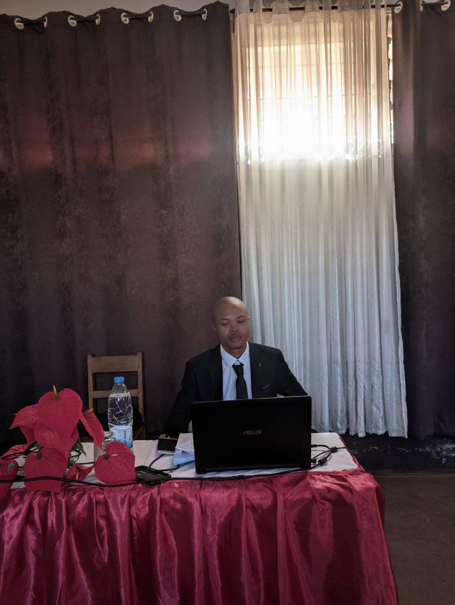

Disponible maintenant
Ingénieur DevOps & Développeur Full Stack
Joël
Ferdinand
Web
Mobile
DevOps
Développeur Full Stack
Ingénieur DevOps et développeur Full Stack Web & Mobile à Fianarantsoa (Madagascar), je conçois, déploie et optimise des applications modernes : React.js, Node.js, Python, Flutter, Docker et pipelines CI/CD avec Jenkins.

verified Full Stack & DevOps
folder_open
6
Projets et missions réalisés
school
5
Années de formation en informatique
layers
3
Domaines : Web, Mobile et DevOps
Savoir-Faire
Mes Compétences
Front-End & Frameworks
Développement Web
React JS, Vite, HTML5, CSS3, JavaScript (ES6+)
Serveur & Architecture
Backend & API REST
Node.js, Express, Python (Django), PHP (Laravel)
Automatisation & Conteneurs
DevOps & CI/CD
Docker, Jenkins, Linux (Kali/Ubuntu), Prometheus, cAdvisor
Mobile & Stockage
Applications Mobile & BDD
Flutter, Dart, PostgreSQL, MySQL, SQLite
Un projet, une opportunité ?
Découvrez mes réalisations ou contactez-moi directement.